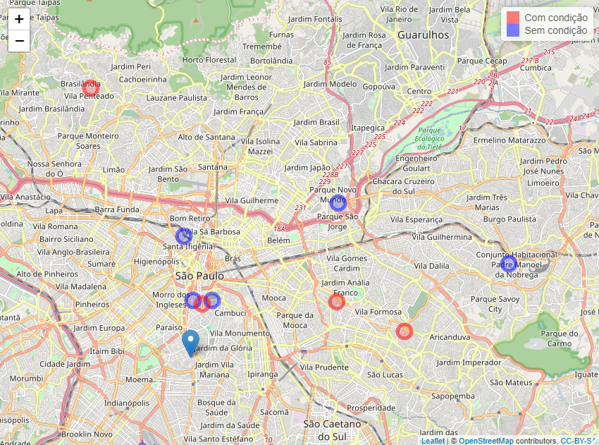

O objetivo de milton é oferecer ferramentas para facilitar o georreferenciamento de dados no Brasil.
Instalação
Você pode instalar a versão de desenvolvimento de milton do GitHub com o código abaixo:
# install.packages("devtools")
devtools::install_github("tomasbarcellos/milton")Georreferenciando endereços
O pacote permite que você georrefenrencie seus dados com:
- Endereço
- CEP
av <- get_addr("Avenida pequeno príncipe")
av
#> Geometry set for 1 feature
#> Geometry type: POINT
#> Dimension: XY
#> Bounding box: xmin: -48.4922 ymin: -27.68202 xmax: -48.4922 ymax: -27.68202
#> Geodetic CRS: SIRGAS 2000
#> POINT (-48.4922 -27.68202)
# CEP da avenida pequeno principe
get_addr("88063-000")
#> Geometry set for 1 feature
#> Geometry type: POINT
#> Dimension: XY
#> Bounding box: xmin: -48.49422 ymin: -27.6804 xmax: -48.49422 ymax: -27.6804
#> Geodetic CRS: SIRGAS 2000
#> POINT (-48.49422 -27.6804)Identificando pertencimento
Carregando funções de utilidade para ler e manipular dados.
library(tidyverse)
#> -- Attaching packages --------------------------------------- tidyverse 1.3.1 --
#> v ggplot2 3.3.5 v purrr 0.3.4
#> v tibble 3.1.5 v dplyr 1.0.7
#> v tidyr 1.1.4 v stringr 1.4.0
#> v readr 2.0.2 v forcats 0.5.1
#> -- Conflicts ------------------------------------------ tidyverse_conflicts() --
#> x dplyr::filter() masks stats::filter()
#> x dplyr::lag() masks stats::lag()Também é possível identificar o município e o setor censitário de um endereço. Para tanto precisamos dos endereços que vamos localizar e as geometrias em que eles devem ser identificados.
mun <- geobr::read_municipality(year = 2018) %>%
rename(geometry = geom)A função geopart permite fazê-lo.
geo_av <- geopart(av, mun)
ggplot(mun[geo_av, ]) +
geom_sf() +
theme_void()
A API do pacote foi construída buscando permitir o uso do pipe (%>%).
geo_museu <- get_addr("Museu da Língua Portuguesa") %>%
geopart(mun)
ggplot(mun[geo_museu, ]) +
geom_sf() +
theme_void()
Para a identificação do setor censitário também é possível usar a mesma função. Para tanto deve-se usar como segundo argumento os polígonos dos setores censitários. Uma forma fácil de acessar esses polígonos é usando o pacote geobr: geobr::read_census_tract.
setores <- geobr::read_census_tract(3550308) %>%
rename(geometry = geom)Com estes polígonos em mãos é possível identificar o setor censitário ao qual determinado endereço pertence.
epm <- get_addr("Rua botucatu, 740")
geo_epm <- geopart(epm, setores)
ggplot(setores[geo_epm, ]) +
geom_sf() +
theme_void()
Outra funcionalidade do pacote permite relacionar endereços distintos, medindo suas distâncias ou identificando o local mais próximo.
Suponhamos que tenhamos uma tabela com os endereços os pacientes A, B e C:
pacientes <- tibble(
paciente = LETTERS[1:3],
endereco = c(
"Av. Dr. Altino Arantes, 941",
"Rua Gandavo, 349, São Paulo",
"Rua Bela cruz, 40"
)
) %>%
mutate(latlon = get_addr(endereco))
pacientes
#> # A tibble: 3 x 3
#> paciente endereco latlon
#> <chr> <chr> <POINT [°]>
#> 1 A Av. Dr. Altino Arantes, 941 (-46.6368 -23.60279)
#> 2 B Rua Gandavo, 349, São Paulo (-46.64136 -23.59199)
#> 3 C Rua Bela cruz, 40 (-46.5806 -23.57739)E agora é possível calcular a distância entre esses pontos e a Escola Paulista de Medicina.
pacientes %>%
mutate(distancia_km = distancia(latlon, epm))
#> # A tibble: 3 x 4
#> paciente endereco latlon distancia_km[,1]
#> <chr> <chr> <POINT [°]> <dbl>
#> 1 A Av. Dr. Altino Arantes, 941 (-46.6368 -23.60279) 0.752
#> 2 B Rua Gandavo, 349, São Paulo (-46.64136 -23.59199) 0.827
#> 3 C Rua Bela cruz, 40 (-46.5806 -23.57739) 6.82Há um conjunto de funções que permite identificar, por exemplo, o local mais adequado para tratar determinado paciente:
-
min_distretorna a menor distância; -
nearplaceretorna o local mais próximo.
Desse modo, dado um conjunto de hospitais:
hospitais <- c("Hospital São Paulo",
"Hospital Dom Alvarenga",
"Hospital Paulistano")
geo_hospitais <- get_addr(hospitais)É possível identificar a distância dos hospitais para o paciente C:
paciente_C <- pacientes$latlon[3]
distancia(paciente_C, geo_hospitais)
#> [,1] [,2] [,3]
#> [1,] 6.802523 3.571139 6.42353Assim como o hospital de menor distância.
min_dist(paciente_C, geo_hospitais)
#> [1] 3.571139E o hospital mais próximo.
Usando CEPs
Tomemos um conjunto qualquer de CEPs.
df_ceps <- tibble(
ceps = c("01215010", "01508010", "01519000", "01526010", "02180080",
"02849170", "03347070", "03380150", "03590080", "03737230",
"04011060", "04018000", "04050060", "04108001", "04111000",
"04233140", "04421150", "04433180", "04633030", "04813190",
"04853185", "05010000", "05409002", "05540020", "05790230",
"06000150", "07717170", "07858150", "07865115", "08062320",
"08140000", "08142710", "08370220", "08421520", "08700000",
"08770130", "08790000", "08793030", "09911550")
)Assumamos que representam o endereço de pacientes cujas condições estão apresentadas na tabela abaixo.
set.seed(123)
df_pacientes <- df_ceps %>%
mutate(
id = seq_along(ceps),
condicao = sample(c(0, 1), length(ceps), replace = TRUE)
)
df_pacientes
#> # A tibble: 39 x 3
#> ceps id condicao
#> <chr> <int> <dbl>
#> 1 01215010 1 0
#> 2 01508010 2 0
#> 3 01519000 3 0
#> 4 01526010 4 1
#> 5 02180080 5 0
#> 6 02849170 6 1
#> 7 03347070 7 1
#> 8 03380150 8 1
#> 9 03590080 9 0
#> 10 03737230 10 0
#> # ... with 29 more rowsAgora usemos as funções do pacote para complementar nosso bando de dados com:
- Georreferenciamento dos pacientes
- Identificação do setor censitário em que os pacientes estão localizados
- Relacionamento com dados do IPVS do referido setor censitário
- Identificação do ponto mais próximo de cada paciente (dado uma lista)
- Cálculo da distância entre os pacitentes e o ponto definido em 4)
- Criar mapa dos pacientes (leaflet)
1. Georreferenciamento dos pacientes
geo_pacientes <- df_pacientes %>%
mutate(endereco = cep(ceps),
ponto = get_addr(endereco))
geo_pacientes
#> # A tibble: 39 x 5
#> ceps id condicao endereco ponto
#> <chr> <int> <dbl> <chr> <POINT [°]>
#> 1 01215010 1 0 Rua Helvétia, São Paulo (-46.64122 -23.5331)
#> 2 01508010 2 0 Rua Taguá, São Paulo (-46.63652 -23.56167)
#> 3 01519000 3 0 Rua do Lavapés, São Paulo (-46.62748 -23.56164)
#> 4 01526010 4 1 Rua Tenente Otávio Gomes, São ~ (-46.63209 -23.56342)
#> 5 02180080 5 0 Rua Soldado Manasses de Aguiar~ (-46.56587 -23.51827)
#> 6 02849170 6 1 Rua Bernardo Rincon, São Paulo (-46.68629 -23.46706)
#> 7 03347070 7 1 Rua Maestro Artur Elias Kauffm~ (-46.5665 -23.56242)
#> 8 03380150 8 1 Rua Cruzeiro dos Peixotos, São~ (-46.53379 -23.57575)
#> 9 03590080 9 0 Rua Padre Manuel Barreto, São ~ (-46.48273 -23.54557)
#> 10 03737230 10 0 Rua Conceição do Rio Verde, Sã~ (-46.50943 -23.51041)
#> # ... with 29 more rows2. Identificação do setor censitário em que os pacientes estão localizados
setor_paciente <- geo_pacientes %>%
mutate(idx = map_int(ponto, geopart, setores),
setor = setores$code_tract[idx])
setor_paciente
#> # A tibble: 39 x 7
#> ceps id condicao endereco ponto idx setor
#> <chr> <int> <dbl> <chr> <POINT [°]> <int> <chr>
#> 1 01215010 1 0 Rua Helvétia, São~ (-46.64122 -23.5331) 13923 35503~
#> 2 01508010 2 0 Rua Taguá, São Pa~ (-46.63652 -23.56167) 10240 35503~
#> 3 01519000 3 0 Rua do Lavapés, S~ (-46.62748 -23.56164) 10223 35503~
#> 4 01526010 4 1 Rua Tenente Otávi~ (-46.63209 -23.56342) 10167 35503~
#> 5 02180080 5 0 Rua Soldado Manas~ (-46.56587 -23.51827) 17418 35503~
#> 6 02849170 6 1 Rua Bernardo Rinc~ (-46.68629 -23.46706) 1001 35503~
#> 7 03347070 7 1 Rua Maestro Artur~ (-46.5665 -23.56242) 107 35503~
#> 8 03380150 8 1 Rua Cruzeiro dos ~ (-46.53379 -23.57575) 16920 35503~
#> 9 03590080 9 0 Rua Padre Manuel ~ (-46.48273 -23.54557) 536 35503~
#> 10 03737230 10 0 Rua Conceição do ~ (-46.50943 -23.51041) 12705 35503~
#> # ... with 29 more rows3. Relacionamento com dados do IPVS do referido setor censitário
Ler dados do Índice Paulista de Vulnerabilidade Social (IPVS).
ipvs <- ler_ipvs() %>%
select(setor = codigo_do_setor_censitario,
idade_media_setor = idade_media_das_pessoas_responsaveis,
p_renda_meio_sm_setor = proporcao_de_domicilios_particulares_com_rendimento_nominal_mensal_de_ate_1_2_s_m,
p_alfabetizadas_setor = proporcao_de_pessoas_responsaveis_alfabetizadas)
#> Rows: 73 Columns: 2
#> -- Column specification --------------------------------------------------------
#> Delimiter: "\t"
#> chr (2): Variável, Descrição
#>
#> i Use `spec()` to retrieve the full column specification for this data.
#> i Specify the column types or set `show_col_types = FALSE` to quiet this message.
#> i Using "','" as decimal and "'.'" as grouping mark. Use `read_delim()` for more control.
#> Rows: 66096 Columns: 51
#> -- Column specification --------------------------------------------------------
#> Delimiter: ";"
#> chr (5): v2, v4, v6, v62, v9
#> dbl (46): v1, v3, v5, v61, v7, v8, v10, v11, v12, v13, v14, v15, v16, v17, v...
#>
#> i Use `spec()` to retrieve the full column specification for this data.
#> i Specify the column types or set `show_col_types = FALSE` to quiet this message.Relacionar com dados dos pacientes
paciente_ipvs <- setor_paciente %>%
left_join(ipvs, by = "setor")
glimpse(paciente_ipvs)
#> Rows: 39
#> Columns: 10
#> $ ceps <chr> "01215010", "01508010", "01519000", "01526010", ~
#> $ id <int> 1, 2, 3, 4, 5, 6, 7, 8, 9, 10, 11, 12, 13, 14, 1~
#> $ condicao <dbl> 0, 0, 0, 1, 0, 1, 1, 1, 0, 0, 1, 1, 1, 0, 1, 0, ~
#> $ endereco <chr> "Rua Helvétia, São Paulo", "Rua Taguá, São Paulo~
#> $ ponto <POINT [°]> POINT (-46.64122 -23.5331), POINT (-46.636~
#> $ idx <int> 13923, 10240, 10223, 10167, 17418, 1001, 107, 16~
#> $ setor <chr> "355030869000101", "355030849000088", "355030849~
#> $ idade_media_setor <dbl> 41.70769, 44.28804, 37.60440, 48.37607, 50.01099~
#> $ p_renda_meio_sm_setor <dbl> 9.2105263, 1.1627907, 12.8205128, 2.5641026, 9.8~
#> $ p_alfabetizadas_setor <dbl> 93.53846, 97.82609, 95.97070, 98.71795, 97.80220~4. Identificação do ponto mais próximo de cada paciente (dado uma lista)
Dados dois pontos, identificar aquele mais próximo de cada paciente.
ps <- get_addr(c("04017-030", "Hospital Albert Einstein"))
nomes_ps <- c("Caism Vila Mariana", "Einstein")
paciente_ipvs %>%
select(id, condicao, ceps, endereco, ponto) %>%
mutate(prox = nearplace(ponto, ps),
nome_prox = nomes_ps[which_nearplace(ponto, ps)]) %>%
glimpse()
#> Rows: 39
#> Columns: 7
#> $ id <int> 1, 2, 3, 4, 5, 6, 7, 8, 9, 10, 11, 12, 13, 14, 15, 16, 17, 1~
#> $ condicao <dbl> 0, 0, 0, 1, 0, 1, 1, 1, 0, 0, 1, 1, 1, 0, 1, 0, 1, 0, 0, 0, ~
#> $ ceps <chr> "01215010", "01508010", "01519000", "01526010", "02180080", ~
#> $ endereco <chr> "Rua Helvétia, São Paulo", "Rua Taguá, São Paulo", "Rua do L~
#> $ ponto <POINT [°]> POINT (-46.64122 -23.5331), POINT (-46.63652 -23.56167~
#> $ prox <POINT [°]> POINT (-46.63795 -23.58774), POINT (-46.63795 -23.5877~
#> $ nome_prox <chr> "Caism Vila Mariana", "Caism Vila Mariana", "Caism Vila Mari~5. Cálculo da distância entre os pacitentes e o ponto definido em 4)
paciente_ipvs %>%
select(id, condicao, ceps, endereco, ponto) %>%
# Em quilometros
mutate(distancias = distancia(ponto, ps)) %>%
glimpse()
#> Rows: 39
#> Columns: 6
#> $ id <int> 1, 2, 3, 4, 5, 6, 7, 8, 9, 10, 11, 12, 13, 14, 15, 16, 17, ~
#> $ condicao <dbl> 0, 0, 0, 1, 0, 1, 1, 1, 0, 0, 1, 1, 1, 0, 1, 0, 1, 0, 0, 0,~
#> $ ceps <chr> "01215010", "01508010", "01519000", "01526010", "02180080",~
#> $ endereco <chr> "Rua Helvétia, São Paulo", "Rua Taguá, São Paulo", "Rua do ~
#> $ ponto <POINT [°]> POINT (-46.64122 -23.5331), POINT (-46.63652 -23.5616~
#> $ distancias <dbl[,2]> <matrix[26 x 2]>6. Criar mapa dos pacientes (leaflet)
library(leaflet)
lat_ps <- unlist(ps[[1]])[2]
lon_ps <- unlist(ps[[1]])[1]
paciente_ipvs %>%
mutate(lon = map_dbl(ponto, ~unlist(.x)[1]),
lat = map_dbl(ponto, ~unlist(.x)[2])) %>%
leaflet() %>%
addTiles() %>% # Add default OpenStreetMap map tiles
addCircleMarkers(~lon, ~lat, label = ~p_renda_meio_sm_setor, color = ~ifelse(condicao == 1, "red", "blue")) %>%
addMarkers(lon_ps, lat_ps, label = "Caism Vila Mariana") %>%
addLegend(colors = c("red", "blue"), labels = c("Com condição", "Sem condição"))